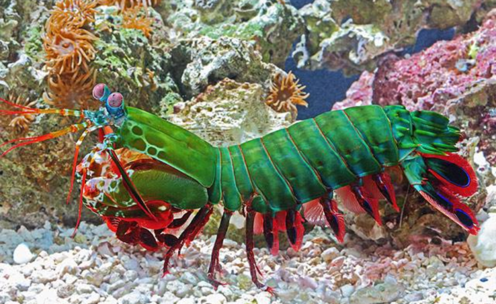
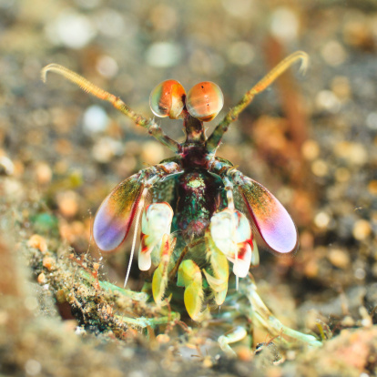

Fatos sobre o Stomatopoda

- Possui de 15 a 30 centímetros
- Socos capazes de causar supercavitação
- Também conhecido como lacraias-do-mar
| Reino | Animalia |
| Filo | Arthropoda |
| Subfilo | Crustacea |
| Classe | Malacostraca |
| Subclasse | Hoplocarida |
| Ordem | Stromatopoda |
Sua anatomia diferenciada é o fator primordial para que seja extremamente preciso na hora caçar sua presa, com seus ataques que podem alternar entre esmagadores e perfuradores, somado a sua alta velocidade o torna um invertebrado assustador. 
Suas patas dianteiras são mais do que necessárias para o classificar como um "mutante marinho", já que, podem desferir "socos" com a intensidade de 60 kg/cm².
